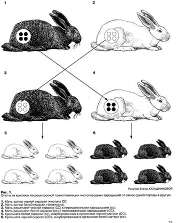

К. Ю. Старохамская
Кому нужен миф о телегонии? Песнь о полосатой кобыле
...Что нужно, чтобы считать себя человеком передовых взглядов? Не так уж много.
- Прежде всего, нужно презирать «школьную науку», потому что она «многого не знает и знать не может». Презирать намного легче, чем выучить.
- Нужно верить решительно во все мутные теории, которые попадаются в бульварных газетах и книгах типа «Победа над разумом». В книгах можно читать только предисловие или аннотацию вроде «В этой книге вам откроется истина про пирамидные структуры».
- Постоянно поминать Галилея и Джордано Бруно, которых «тоже не признавали» (совершенно не заморачиваясь тем, что не признавали их отнюдь не ученые, а наоборот – религиозные фанатики).
- Часто употреблять слова вроде «непознанное», «сверхчувственное», «торсионные поля», «энергоинформационные матрицы», «эгрегор» и т.п.
- Научиться драматически хохотать над скучными материалистами, которые вообще ни во что не верят, пока им не предъявят убедительные доказательства.
Вот, собственно, и все.
Среди мутных теорий одно из почетных мест занимает теория телегонии. В каком-то смысле она даже чемпион, потому что представляет собой самое наглядное сочетание давности существования с полным отсутствием подтверждающих фактов.
Телегония – псевдонаучная концепция, исходящая из представления, что влияние генофонда мужской особи, выступающей в качестве первого сексуального партнёра для женской особи, существенно сказывается на наследственных признаках потомства последней, зачатых от других особей.
Телегония покоится на трех китах:
1. История про полосатую кобылу лорда Мортона, которая дословно повторяется во всех текстах о телегонии, явно скопированная с одного источника. История повествует о том, что лошадь, сначала неудачно вышедшая замуж за самца зебры, затем от другого (чистопородного) жеребца произвела на свет полосатых жеребят. Обычно защитники телегонии приводят только первую часть этой истории, заканчивая цитату на семейной драме этой несчастной лошади. Между тем, в этой истории есть еще две части. Вторая повествует о том, что вдохновленные интересным результатом ученые тут же произвели еще серию аналогичных экспериментов, из которых результат с переносом признаков первого мужа на детей от второго не подтвердился ни в одном случае. Ни разу.
А в третьей части объясняется, что в очень редких случаях жеребята с полосками могут появляться в результате атавизма (как хвост у человека или знаменитый по учебникам биологии волосатый человек Андриан Евтихеев). А самец зебры вовсе и ни при чем.
2. Второй кит – это мнение собакозаводчиков о том, что если породистая собачка тово... согрешила с посторонним кобельком, то потом сколько ни скрещивай с чистопородными – потомство все равно будет «какое-то не такое». И поэтому они таких морально неустойчивых собачек больше в производительницы не берут. Ни-каг-да! И ни-за-что! А раз не берут, то и результатов, подтверждающих сей тезис, никто никогда не видел. Слухи – это да, слухи слышали. Дядя рассказывал, что точно, а тетя сама видела.
Здесь тоже много неясного. Прежде всего – почему признаки непородистой собачки на генотипе морально неустойчивой мамаши «отпечатываются», а признаки породистых – нет (то есть неизвестны случаи, чтобы от беспородного отца рождались сплошь породистые потомки, потому что мамаша сначала женилась на породистом папаше). А жаль – ведь как было бы удобно скотопромышленникам: чистопородные, допустим, быки и свиньи стоят кучу денег, а так можно было бы свести всех коров с дорогущим элитным производителем только по одному разу. Дальше спокойно ехать домой и производить замечательное породистое потомство от обычного деревенского бычка. Но почему-то такое явление совершенно не известно...
3. Третий кит – это «дети фестиваля», а именно – разнообразные случаи рождения темнокожих младенцев у женщин, которые уверяли, что когда-то давно, правда, были у них иностранные партнеры из экзотических стран, но сейчас – ни-ни. Этот вопрос мы оставим за деликатностью, грешно смеяться над человеческой доверчивостью.
Еще интереснее задаться вопросом, почему на потомство оказывает влияние только первый самец, с которым имела дело женская особь. Это чаще всего подчеркивается тогда, когда о телегонии говорят поборники девственности – вот, мол, почему с древних времен люди так заботились о невинности невест. Логически это еще сложнее: не всякое соитие «записывается в матрице» женщины, а только первое, то есть, надо полагать, в женском организме имеется только одна «ячейка памяти», в которую могут записаться несомые мужчиной признаки. Первый обладатель занимает ее – и все. Расписался. Тогда становится непонятно – отчего те же древние патриархальные племена так сурово относились к изменам мужу? Ведь если муж был-таки первым, то остальные любовники уже никакого влияния не окажут, и все дети как бы от них – все равно будут похожи на мужа? Он просто сделает за мужа его работу? Это уж совсем какая-то ахинея. Но так далеко поборники нравственности в логических построениях не заходят, они увлекаются пафосом «нравственности», а нравственность в их представлении довольно-таки узко физиологически локализована.
Не то чтоб я против нравственности и за бешеный разврат, – нужно это оговорить, потому что в комментарии тут же придут проповедники, не привыкшие рассуждать и дочитывать до конца сложноподчиненные предложения, и заведут дискуссию в дебри «насчет морали». А это нам тут совсем не нужно и неинтересно. Мы говорим исключительно о телесном: записываются где-то какие-то признаки самца в организме самки или нет? И если записываются, то где? На каких, современно говоря, носителях?
Итак, главная идея телегонии – это хранение организмом матери признаков предыдущих половых партнеров. Поскольку зародыш образуется строго из двух половых клеток, отца и матери, то приходится признать, что информация о прошлых событиях хранится где-то еще, а именно – в соматических (неполовых) клетках. Попытка доказать наличие таких влияний – одна из идей Лысенко Трофима Денисовича, на которую он потратил немало государственных средств и человеческих жизней, поскольку все те ученые-генетики, кто не солашался с его идеями, оказывались в лагерях или были расстреляны. Такие вот убедительные тогда были аргументы в науке. Впоследствии комплексная проверка работ Лысенко и его соратников показала их полную научную несостоятельность.
Из энциклопедии «Британика»: «…Телегония предполагает, что признаки индивида наследуются не только от его родителей, но и от других самцов, от которых его мать имела предыдущие беременности Все подобные мнения – от наследования приобретенных признаков до телегонии – сейчас должны рассматриваться как суеверия. Они не основываются на экспериментальных исследованиях и не совместимы с известными нам механизмами наследственности».
В упомянутых выше книгах о «победе над разумом» полным-полно фантастических взглядов о ДНК как о «голограмме» с хаотическим использованием сложнейшей физической, генетической и молекулярно-биологической терминологии вперемешку с терминологией фантастической (торсионные поля, энергоматрица). Никакими практическими результатами «волновая генетика» не подтверждена и никакого «волнового перехода информации от предыдущих самцов на неопределимых приборами носителях» наукой не обнаружено.
Нет фактов, господа, просто-напросто НЕТ ни одного корректно проведенного эксперимента, который показал бы такой сверхчувственный перенос информации...
"Как теоретические законы генетики, так и генетически контролируемые эксперименты полностью отвергают явление телегонии. Все отмечавшиеся в старой литературе по селекции и практическими работниками-селекционерами случаи, указывающие на возможность телегонии, объясняются явлениями другого порядка". (Жypнaл «Дpyг»)
Итак, скрупулезно придерживаясь канонов, вернемся к вопросу в заголовке: кому же нужен этот миф?
Очевидно, он очень удобен обскурантам – проповедникам патриархального отношения к женщине как к «инкубатору», который должен производить безупречное потомство, и невежественным любителям «непознанного», которым лень постигать традиционные науки, но нравятся квазинаучные теории в духе Василия Семибулатова, А.А.Выбегалло и старикашки Эдельвейса.
Полосатая дочь кобылы лорда Мортона
М.М. АСЛАНЯН, доктор биологических наук, профессор кафедры генетики и селекции
А. С. СПИРИН, доктор биологических наук, действительный член РАН, профессор кафедры молекулярной биологии; Московский Государственный Университет.
"Нет никаких доказательств в пользу существования явлений телегонии, хотя в него верят многие поколения собаководов. Суть этого явления его приверженцы полагают в том, что каждая предыдущая беременность у животного оказывает влияние на последующую", – так пишет известный генетик Ф. Хатт в книге "Генетика животных".
Итак, телегония – это предполагаемое влияние предыдущего спаривания (предыдущего самца) на потомство от последующего спаривания (последующего самца). Этот предрассудок оказался весьма распространённым и не миновал и заводчиков кошек. Некоторые из них беспокоятся, не погибла ли для получения чистопородного потомства их ценная кошка, принесшая незаконнорожденных котят от случайного спаривания с неизвестным котом или известным соседским бандитом. Беспокоиться не надо – конечно, не погибла.
В конце прошлого и начале нынешнего века вера в телегонию была распространена среди селекционеров, работающих с различными видами домашних животных – лошадьми, свиньями, коровами, и др. Наибольшую известность получил случай с арабской кобылой лорда Мортона, описанный Ч. Дарвином: "Почти чистокровная арабская караковая кобыла принесла гибрида от квагги (один из видов зебры), а затем она произвела двух жеребят от вороного арабского жеребца. У этих жеребят местами была соловая окраска, а на ногах были более явственные полосы, чем у настоящего гибрида и у самого квагги".
Для проверки гипотезы о телегонии селекционером К. Юартом в 1889 году был поставлен специальный опыт. От 8 чистопородных кобыл и жеребца зебры было получено 13 гибридов-зеброидов. После этого тех же кобыл спаривали с жеребцами своей породы, от которых они принесли 18 жеребят. Ни один из жеребят не имел никаких зеброидных признаков. Другими словами, явление телегонии не получило доказательств. Подобные же результаты были получены в опытах русского учёного, основоположника метода искусственного осеменения И. И.Иванова, проведенных в Аскания-Нова, по скрещиванию кобыл с зебрами. Надо сказать, что одновременно накапливающийся селекционный материал свидетельствавал и о другом: некоторые лошади, никогда не встречавшиеся с зебрами, могут давать жеребят с характерной зеброидной полосатостью ног. Таким образом, появление указанного признака могло быть интерпретировано как явление атавизма, никак не связанное с предыдущими спариваниями.
Спрашивается, зачем же надо было проводить длительные эксперименты по скрещиванию кобыл с зебрами и последующим спариванием этих же кобыл с чистопородным жеребцом своей породы, когда можно было поставить подобные скрещивания с генетически чистыми линиями мышей или кроликов и получить материал на нескольких сотнях потомков, и значительно быстрее? Такие эксперименты на мышах и кроликах действительно ставились и убедительно показывали отсутствие телегонии. Но правы были те экспериментаторы, которые помогали животноводам в приобретении генетических познаний, и понимающие, что никакие опыты с мышами не разуверят животновода, своими глазами увидевшего полосатую дочь кобылы лорда Мортона, в существовании телегонии. В этом заключалась психологическая ценность опытов К. Юарта и И. И. Иванова.
В разное время предлагалось несколько вариантов объяснений "явления телегонии". Одно из них весьма фантастическое, но сродни современным мифам о фантомах, полях и "энергиях": воображение матери, дескать, испытало такое сильное влияние, что предшествующее спаривание повлияло на потомство от последующего. Другое объяснение – более материального свойства: делалось смелое предположение, что в связи с тесным соприкосновеним тканей и свободным сообщением кровеносных сосудов плода и матери плод изменил генетику материнского организма. Третье объяснение ещё проще: мужской элемент – сперма – влияет на самку непосредственно и изменяет её, а самка в свою очередь уже влияет на развивающийся зародыш. Последние версии усиленно поддерживались сторонниками "мичуринской биологии", проводившими идею о генетическом влиянии сомы (бренного тела) на зародышевые клетки. С позиций современной генетики и громадного экспериментального материала, ею накопленного, все эти версии не выдерживают критики.
То, что вся генетика будущего организма определяется только объединяющимися в процессе оплодотворения яйцеклеткой и сперматозоидом – твёрдо установленный факт. Даже с случае полиспермии (проникновения под оболочку яйцеклетки нескольких спермиев) ядро яйцеклетки объединяется с ядром только одного единственного сперматозоида, в результате чего образуется зигота без генетического вклада других сперматозоидов.
Наглядным примером отсутствия влияния материнского организма на генетически детерминированную окраску потомства служат многочисленные эксперименты по реципрокной трансплантации чистопородных зародышей от самок одной породы в другую. Десятки таких экспериментов проведены на кроликах, мышах, овцах и т. п. Генетически чёрный зародыш, развивающийся в организме белой матери, всегда вырастает в чёрную особь, а генетически белый зародыш, растущий в организме чёрной матери, всегда окажется существом белого окраса. На схематическом рисунке 1 вверху изображены чистопородные крольчихи-доноры: 1 – чёрного окраса, генотип СС, и 2 – белого окраса, генотип сс, с чистопородными зародышами соответствующего окраса; в среднем ряду – крольчихи-реципиенты: 3 – чёрного окраса, с пересаженными эмбрионами от белой самки-донора 2 генотипа сс, и 4 – белого окраса, с пересаженными эмбрионами от чёрной самки-донора 1 генотипа СС. В нижнем ряду рисунка показаны крольчата, родившиеся от самок-реципиентов – все они сохраняют генотип и фенотип крольчих-доноров! Развитие крольчат в организме матерей-реципиентов никак не сказывается на их окрасе, заданном исходными генами. То же самое наблюдается в экспериментах с любыми другими видами животных, так же как и в практике с "суррогатными мамами" у человека.
Откуда же берутся "факты", демонстрирующие "явление телегонии"? Большинство таких фактов – это появление у потомства неожиданных признаков, обычно дикого типа, отсутствующих у непосредственных родителей, но иногда, по случайности, присутствовавших у одного из самцов, ранее спаривавшихся с данной самкой. Анализ показывает, что здесь могут иметь место явления трёх типов. (1) Случаи атавизма – спорадического непредсказуемого появления дикого признака у одного их потомков. Хрестоматийный пример – появление хвоста у человеческого ребёнка ("хвостатый мальчик" – см. учебник для средней школы и Габриэль Гарсия Маркес "Сто лет одиночества"). Атавизм является результатом генетической реверсии - спонтанной вторичной мутации (или мутаций), восстанавливающей генетическую информацию, изменённую первичной мутацией. Атавизм в окрасе – например, неожиданное появление дикого признака "тэбби" (полосатость окраса) у кошки, являющейся потомком неполосатых родителей – явление, гораздо менее редкое, чем хвост у человека. (2) Фенотипическая реверсия признака дикого типа, обусловленная взаимодействием разных генов. Например, у кошек признак "тэбби" может появиться при наличии гена рыжего окраса (О), который подавляет действие гена "нон-агути" даже в двойном наборе (аа). Другой пример взаимодействия генов окраса у кошек - эпистатическое (подавляющее все другие окрасы) действие гена белого окраса (W); поэтому при спаривании белой кошки или кота, и даже при спаривании белой кошки с белым котом, в потомстве могут "вылезти" любые окрасы, и никакой прохожий кот тут не при чём. (3) Выявление скрытых – рецессивных – признаков в результате расщепления при определённых сочетаниях родительских генотипов. Использование не чистых (заметьте у Дарвина - "Почти чистокровная арабская кобыла..." – видимо, всё-таки не чистокровная!), сильно гетерозиготных линий родителей часто даёт неожиданные результаты в потомстве, порой напоминающие признаки какого-либо прежнего жениха кошки.
Таким образом, следует общий вывод: как теоретические законы генетики, так и генетически контролируемые эксперименты полностью отвергают явление телегонии. Все же отмечавшиеся в старой литературе по селекции и практическими работниками-селекционерами случаи, указывающие на возможность телегонии, объясняются явлениями другого порядка.
А теперь мнение DoctoR'а в небольшой перефразировке с моими добавлениями.
Исторически это смотрелось примерно так: Дарвин со своей эволюцией буквально стал занозой в заднице массы ученых того времени (психологически ясно – проявления комплекса неудачника – они знали, что ничего подобного уровня сотворить не смогут). И вот ученый такого типа Ф.Ледантек тоже ваяет книгу, и дает ей не менее "глобальное" название – "Индивид, эволюция, наследственность и неодарвинисты" И в ней есть знаменитая глава 24 – "Телегония или влияние первого самца". А в этой главе есть не менее знаменитая домашняя свинья, которую случайно трахнул дикий кабан. И вот эта свинья, уже живя со вполне официальным домашним боровом, продолжала производить бурых поросят (цвета первого любовника).
А вот науки там нет. Ну – тут дальше не развиваю, понятно. Замечу только, что работа Ледантека основывалась не на научных экспериментах, а на "бытовом опыте", поэтому ее выводы не только методологически некорректно получены, но и экстраполируются на все, что хочешь.
Эта теория отрабатывает еще один запрос – социально-идеологичекский. Она фактически оправдывает снобизм жлобов, чмыривших внебрачный (или криминальный) секс. Девушка, подвергшаяся изнасилованию, подвергается остракизму. Живет с молодым человеком, о котором не знают родители? – значит, живет с "чернокровным", ведь папики, когда подбирают детям партию, до 30 колена учитывают родословную (и подменяют понятие "здоровый род" понятием "социально удачный род"). Но... этот миф поддерживает к жизни все та же глобальная тяга людей к снятию с себя ответственности: сын-мудак и подлец? – а это не я хреново воспитывад, а жену в студенчестве хулиган трахнул!..
Да, практически никто не упоминает, что сам Юарт, (зоолог, который скрещивал кваггу с кобылой – кстати, совсем в других целях), опроверг теорию телегонии уже ВТОРЫМ экспериментом.
А сейчас сторонники телегонии (обычно – церковники) уже потеряли большинство своих доводов – и прячутся под чисто иделогогическую аргументацию – "безбожники засекретили этот вопрос". Но... о любой неподтвердившейся теории перестают говорить в мире ученых – вот и результат "засекреченности". Ведь сейчас никто не открывает лабораторий для исследования физиологии китов, на которых стоит Земля.
Короче говоря:
- Существование телегонии наукой не подтверждено.
- Современное развитие генетики не может объяснить такое явление, и доказавший его немедленно получил бы Нобелевку по биологии, причем опыты не требуют какого-либо специальнго оборудования; так почему никто еще не занял очередь?
- Аргументация типа "собачники давно знают..." – это даже не смешно. См. п.2.